Account Reconciliations Implementation
Account Reconciliations Implementation
Understanding Account Reconciliation Projects
In the fall of 2016, I was asked by Peter Fugere to implement a new OneStream MarketPlace solution called Reconciliation Control Manager, or RCM for short. Eventually, the solution’s name was officially changed to Account Reconciliations. This solution was combined with Transaction Matching to become OneStream Financial Close, the MarketPlace solution that exists today.
Although the look and feel of the solution has changed, the core functionality has not. When data is imported into OneStream and loaded to Financial Reporting, Account Reconciliations can leverage that Stage data to create Reconciliations that help a company to identify and correct any errors before internal or external auditors review the financial information.
Account Reconciliations Implementation › Understanding Account Reconciliation Projects
The Concept of Project Phases
When discussing the phases of a project, we are not referring to a phased rollout. In other words, this does not mean that Corporate will go live on Account Reconciliations first, followed by North America, Central America, South America, and Europe. When we discuss the phases of an Account Reconciliation project, we are referring to the entire project itself. This is then broken down into groups of activities that will help the Project Team manage the implementation. These phases are meant to be a group of tasks that need to be completed for the project to proceed smoothly.
Typically, companies will need to move activities from phase to phase because the activity will not be completed while the Users are available for the project. The goal is to complete all the tasks in each phase before any project downtime.
An Account Reconciliation project can be run like any other Consolidation or Planning project. The technical complexity may be less involved than the aforementioned projects, but the timeline can be longer. An Account Reconciliation project needs to be more flexible because Users may not be entirely dedicated to the project and have other responsibilities. In other words, Users have a day job that will take priority. Sometimes, this priority means Users are available only 50% of the month; sometimes, Users are available only 25% or 10% of the month. It is very important to schedule tasks according to Users’ availability. After all, for a successful implementation, Users are your partners in all OneStream projects.
| Note: Account Reconciliation Users typically have close-related tasks to complete in a very specific timeframe. User Acceptance Testing (UAT) should then be completed before Users become unavailable for the project – usually between month-end closes. If UAT cannot be completed in a quarter-end month like March, then UAT should be pushed out to April. This may also cause you to move UAT from Phase 2 to Phase 3. |
By assuming your End-User will have other obligations, your Account Reconciliation project may have some downtime while those Users are completing their month-end close tasks. Breaking the project into four distinct phases is the best way to ensure that we can get the most out of the Project Team while they are available for the project.
The phases will change slightly, depending on whether a Consolidation project has been (or will be) completed. This is because the Account Reconciliations MarketPlace Solution configuration is dependent on the items that would have been built for a Consolidation project.
| Note: Due to Sarbanes-Oxley rules, Account Reconciliations is a tremendous risk control that can be easily configured for any company using OneStream. Consolidation and Account Reconciliation projects both leverage Dimensions, Time profiles, Cubes, FX rates, Workflow Profiles, data sources, and Transformation Rules, and these are just the basic objects. More advanced items – such as Business Rules, Task Scheduler, and Data Management Processes – can also be leveraged. |
If a Consolidation project has not been completed, the Account Reconciliation project will be broken down into four phases in this manner:
Phase One:
Discovery
Pre-Project Planning
Requirements and Design Session
General Application Build Activities
Project Team/Key Stakeholders Introduction
Timeline
Project Management
Scope Discussion
Key Stakeholders sign-off on Configuration Settings
Design Document Created
Review Design and Client Sign-off
Phase Two
Build Tasks
Key Stakeholders sign-off on Build and User Acceptance Testing (UAT)
UAT
Key Stakeholders sign-off on UAT
Phase Three
User Training
Parallel(s)
Phase Four
Key Stakeholders sign-off Go-Live
Go-Live
If a Consolidation project has been (or will be) completed, the milestones for the Account Reconciliation project will be broken down into four phases in this manner:
Phase One
Discovery
Pre-Project Planning
Requirements and Design Session
Project Team/Key Stakeholders Introduction
Timeline
Project Management
Scope Discussion
Key Stakeholders sign-off on Configuration Settings
Design Document Created
Review Design and Client Sign-off
Phase Two
Build Tasks
Key Stakeholders sign-off on Build and UAT
User Acceptance Testing
Key Stakeholders sign-off on UAT
Phase Three
User Training
Parallel(s)
Phase Four
Key Stakeholders sign-off Go-Live
Go-Live
Account Reconciliations Implementation › Understanding Account Reconciliation Projects › The Concept of Project Phases
Phase One
Phase One is the most important to the project because this is where the client will help define the Account Reconciliation configuration. When a Consolidation project has been (or will be) completed, then the metadata Dimensions leveraged in Account Reconciliations will already be defined.
If this is the first OneStream project, then it is important to clearly define if the metadata Dimensions you have created will be leveraged for a Consolidation project. Whenever possible, build the metadata in such a way that it can be leveraged in a Consolidation project; this will avoid any rework in the future and will make it easier to keep the Account Reconciliation configuration intact.
The objective of this phase is to define the remaining project phases and to provide the client with the ability to leverage the work for later projects. We do not want to limit future projects if possible. There are times when a Consolidation project will include more User-defined Dimensions than an Account Reconciliations project. For example, a client may want departments or products in a User-defined Dimension to create financial statements or help report on balances. However, these departments or products are not needed for Account Reconciliations. If you can easily identify User-defined Dimensions, then build them into metadata. This gives you the flexibility to add these Dimensions into Account Reconciliations if needed.
It is important to understand that Entities and Balance Sheet Accounts should be the same for both projects. It is okay if Entities and Accounts need to be added, but if OneStream Entities or Accounts need to be changed later for a Consolidation project, then that may add new Reconciliations to the Account Reconciliation Inventory.
Account Reconciliations Implementation › Understanding Account Reconciliation Projects › The Concept of Project Phases
Phase Two
Phase Two encompasses the main configuration of the Account Reconciliations solution (the build steps), User testing, and sign-off from the client. As previously mentioned, UAT can be moved from Phase two to Phase three, depending on the availability of Users. It is important to have the build completed in one phase. Whenever possible, it is recommended to add time to a phase, as opposed to breaking up the build steps.
Account Reconciliations Implementation › Understanding Account Reconciliation Projects › The Concept of Project Phases
Phase Three
The third phase consists of User training and a delayed parallel of the client’s current Account Reconciliation process. Typically, try to schedule three delayed parallels that consist of only a handful of Accounts; this can always be reduced later. The main objective of the parallels is to have the Users repeat the User training on Reconciliations that have already been completed using the client’s existing process. The repetition of the process will help Users become self-sufficient; in turn, leveraging work that has already been completed will help shorten the learning curve.
Account Reconciliations Implementation › Understanding Account Reconciliation Projects › The Concept of Project Phases
Phase Four
Phase four consists of discussions with the client and meetings to review the project and address any remaining questions before a go-live sign-off. Once the client is live, it is important to support the new Account Reconciliation Administrator(s).
Case Study – Implement Account Reconciliations for GolfStream Congratulations! Your company has just signed a statement of work with GolfStream to implement Account Reconciliations, with the intent of configuring Transaction Matching in the future. We
will use the steps outlined in the following sections to configure Account Reconciliations for
GolfStream.
Before getting started, create a dedicated folder for GolfStream. Under that folder, create another folder called PMO. This will help you organize your project.
Figure 3.1
Account Reconciliations Implementation
Phase One
Think of these phases as building blocks, and Phase One is the cornerstone of the entire project. Having the project detailed in this manner will help to ensure it is easy to track and manage.
Account Reconciliations Implementation › Phase One
Discovery
If possible, talk to the client before any requirements are discussed. Every Account Reconciliation project has the same framework, so there are questions that can be clarified before any meetings are scheduled. In the Discovery step of Phase One, we are trying to define items that do not change from client to client. For example, every client should be able to provide how many Reconciliations are being completed on a monthly, quarterly, and yearly basis. Every client should know which Users will prepare Reconciliations, and which will approve, comment, and view.
Although every Account Reconciliation project has the same framework, there are circumstances unique to every client. Send the client questions regarding their current Account Reconciliation process before meeting with them. This will help keep your meetings on point, and both you and your client will be prepared for the requirements discussion. Any pre-planning you can do will help in the long run. Always keep the end of the project in mind as you review these questions. The objective of the Discovery step is to plan prior to the project start.
Account Reconciliations Implementation › Phase One › Discovery
Questionnaire
A key tool that can be leveraged in the Discovery stage is a questionnaire that can be sent to the client prior to requirements and design meetings. These questions are typically general in nature, focusing on the client’s current Reconciliation process, and will help you get an understanding of the type of project the client needs.
This will also help the design and requirements meeting move along smoothly. It’s always better to be prepared! There are a few sample questions in Appendix 1.
Account Reconciliations Implementation › Phase One › Discovery
Current Reconciliation Process
It is important to understand if the client has a current Reconciliation process or not. In a situation where the client does not have a Reconciliation process, then the concept itself is new. There should be more time spent on training and educating not only for Users, but the Project Team themselves. The adoption of Account Reconciliations in OneStream should always be a key success factor. The best way to ensure there is adoption is through education and training. Understanding this is important when creating an estimate of hours for the statement of work.
If a client has a Reconciliation process, then you should understand how complex it is. Some clients use software, spreadsheets, or sometimes a combination of both. Build all training, videos, and documentation with the client’s current process in mind. The documentation should help a client seamlessly transition from one process to the Account Reconciliation solution in OneStream.
This discussion should provide a listing of current Reconciliations, current Reconciliation Users and their roles (Preparers and Approvers), and examples of data sources.
Account Reconciliations Implementation › Phase One
Requirements and Design Sessions
The requirements and design sessions should be collaborative. Although the client may have a good idea of what they want, they will still be looking for informed suggestions. Either way, always be prepared! One way to do this is to have Account Reconciliations already configured in GolfStream with examples readily available. If GolfStream is not an option, a presentation with screenshots is your best alternative.
Account Reconciliations Implementation › Phase One › Requirements and Design Sessions
Application Metadata Review
Regardless of whether this is the first OneStream project or not, reviewing the client’s metadata is mandatory. Understanding the source data will help you understand how the Reconciliations will work in OneStream. For simplicity, we will use the application metadata from the OneStream GolfStream application.
Account Reconciliations Implementation › Phase One › Requirements and Design Sessions › Application Metadata Review
Dimensions
If the Account Reconciliations MarketPlace solution is the first project, you will need to create Dimensions. Entities, Scenarios, and Accounts are required for Account Reconciliations. These new metadata Members will need to be attached to a Cube, and a Reporting currency will need to be selected. Workflows, data sources, and Transformation Rules will also need to be created. The Flow and User-defined Dimensions can provide more detail to the Account Reconciliations and can also be leveraged for a Consolidation project. If the client would like more detail in the Reconciliation, User-defined fields are the best option.
If a Consolidation project has been or will be completed, then discuss the detail needed in the Account Reconciliation configuration. The Flow and User-defined Dimensions give the client the ability to create detailed Reconciliations.
| Note: The Account Reconciliation Inventory is based on the Source Accounts mapped to Target Accounts through Transformation Rules. |
The following figure shows the Account Dimension used in the GolfStream Cube that will also be leveraged to configure the Account Reconciliation MarketPlace solution.
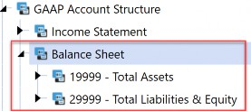
Figure 3.2
Account Reconciliations Implementation › Phase One › Requirements and Design Sessions › Application Metadata Review
Workflow
The Workflow will be the User access point for OneStream. You will have to bind Account Reconciliations to a review or a Base Input Workflow. If these objects have already been built, then understanding the existing security is very important. You will have to incorporate Account Reconciliations security into the application and not change the security that already exists. Users will need to be in the Access Groups attached to the import Workflows that control the data flow.
Note: Issue - a User has the proper security for the Account Reconciliation Workflow, is added to the Access Groups attached to the proper Reconciliations, but still does not see any Reconciliations. Solution - The User also needs access to the appropriate import Workflow. |
Figure 3.3 shows the Houston Base Input Workflow to which Account Reconciliations is bound.
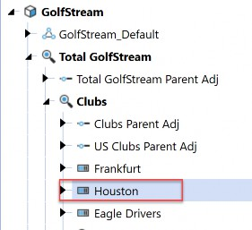
Figure 3.3
The Access Group WF_Houston gives Users the ability to see the Account Reconciliations Dashboard. (The Scenario Type named Model is used for Account Reconciliations in this discussion.)
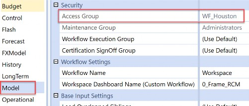
Figure 3.4 Despite this, the User does not see any Reconciliations.
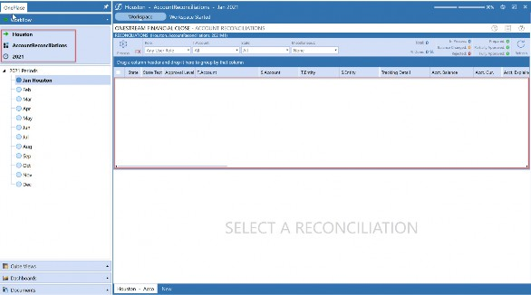
Figure 3.5
The User needs access to the Workflow where the Actual data is imported.
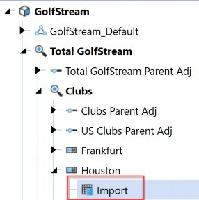
Figure 3.6
Add the proper Workflow Security Group to the Access Group Member.
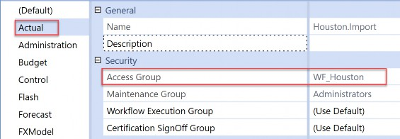
Figure 3.7
The User can now see the Reconciliations.
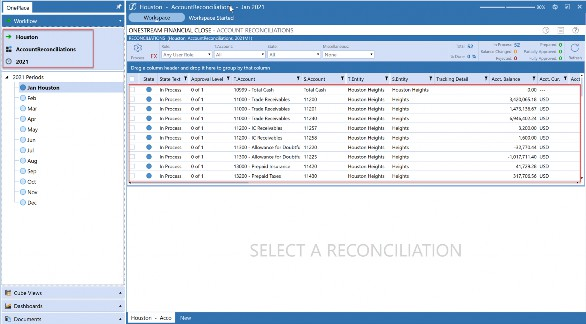
Figure 3.8
Account Reconciliations Implementation › Phase One › Requirements and Design Sessions
Project Team Introduction
Learn who the client believes is important for the Project Team. Get an understanding of what each person’s job entails and how their normal duties are impacted by the project. Is this person in IT or a User? Will this person be the one who makes or follows decisions?
Many times, a project will be progressing until the Users start UAT and you receive unpleasant feedback. Always be prepared for criticism from the Users. Learning a new process is not always easy, so be patient and over-communicate when meeting with Users. Have support from the Project Team before UAT begins. One way to do this is to make sure all communication is clear and concise throughout the project and includes everyone involved.
Account Reconciliations Implementation › Phase One › Requirements and Design Sessions
Timeline
Have a timeline created before the project starts, based on the information collected from the client during Discovery. This sets the expectation of when you will need Users to be available and will help the client plan that availability.
Creating the timeline before meeting with the Project Team will also give the client time to prepare for the project. Changing the timeline for unforeseen activities will naturally impact the deadline. By tracking and addressing these issues, you will gain more insight into a client’s process that – in turn – will lead to better outcomes. Solving these issues in OneStream is more than possible; more often, it is very possible! This demonstrates your willingness to be a ‘partner’ with the client and not just a run-of-the-mill Consultant.
Account Reconciliations Implementation › Phase One › Requirements and Design Sessions
Project Management
Managing the Account Reconciliations project is the key to a successful implementation. Talk about how the client would like to manage the project when discussing the timeline. A project manager should have been identified when the Project Team was discussed. Sometimes these tasks are added to an existing Project Team member and the client already has standard project management documentation. In these situations, leverage the format of existing Status and Budget Update Reports. Regardless of the client’s preference, send a Weekly Status and Budget Report, and schedule weekly meetings to discuss these documents and the project with the Project Team.
Account Reconciliations Implementation › Phase One › Requirements and Design Sessions
Scope Discussion
It is extremely important to have a detailed and extensive scope discussion with the client. Make sure expectations are expressed and documented. By this point in the meetings, try to have a grasp of how the client is structured. You will need answers to each of these questions:
What divisions/Entities/geographies are included in the Reconciliation population?
Is the client reconciling the Balance Sheet and/or Income Statement (typically, only Balance Sheet Accounts are included in the Account Reconciliation population)?
Will there be any subledger Reconciliations?
If so, how will the subledger information be loaded into OneStream?
Discuss special Account classifications that might be needed. What does the client want to do with high, medium, and low-risk Accounts? Find out if there is a need for advanced rules. This will be important because complex rules can add time to the build.
What is the cycle time for Account Reconciliations? What is the expected cycle time once the new process is live?
Review the existing reporting, and discuss reporting requirements.
Define the training and rollout timelines.
Balance Check integrations?
Multiple currencies?
Account Reconciliations Implementation › Phase One
OneStream Account Reconciliations Overview
Many clients have seen demonstrations, but typically the last demo the Project Team attended was at least a few months (or maybe even years) prior to the start of this project. If possible, schedule a OneStream Account Reconciliations demonstration or – at the very least – walk through a few Reconciliation examples in the client’s copy of GolfStream.
Account Reconciliations Implementation › Phase One
Review Design
Creating a design document to track all the configuration settings is very important. Schedule a meeting with the Project Team and walk through these settings, making sure all questions are answered. It may be helpful to show some examples again from GolfStream so the client can visualize the result of the decisions they are making.
Account Reconciliations Implementation › Phase One › Review Design
Case Study – Implement Account Reconciliations for GolfStream
In Phase One, we will want to define as many settings as possible before starting to configure them. Remember that the first time the settings are configured, those settings are applied to all the Base-level Reconciliations. These settings need to be defined so that the client can see the results of their setting choices. Once the client is satisfied with the default settings, then they can decide to change the configuration on an individual Base Reconciliation basis.
Once the Inventory is created using the default settings, then the Account Group can also be created and applied to the individual Reconciliations. This will reduce the number of Reconciliations that Users will have to reconcile.
All the tasks are listed in the appendix, but the following tasks are related to Phase One only.
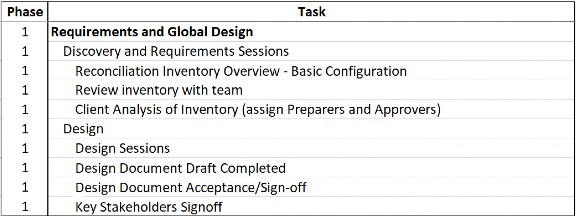
Figure 3.9
The company, GolfStream, makes golf-related products all over the world. Specifically, they sell golf clubs, balls, apparel, accessories, and electronics. For this project, the CFO would like to configure Account Reconciliations for GolfStream’s Houston division.
Houston is made up of two Entities: Houston Heights and South Houston. Houston’s close process is run by one analyst and one manager – Houston Analyst 1 and Houston Manager 1 – respectively. During this project, GolfStream needs to add an Administrator for just Account Reconciliations, three additional analysts, and three additional managers to help with the Reconciliations.
Documentation is the focus of Phase One. A project plan can be created using only the go-live date. In GolfStream’s case, the CFO would like to start using Account Reconciliations for the September close in October. Working backward from 10/01, we can create our milestones in this manner:
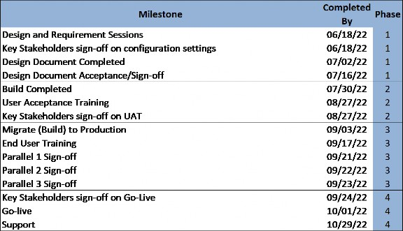
Figure 3.10
When creating project milestones, and as discussed previously, it is important to consider when the Users will be available to prepare and approve Reconciliations. Users do not have many deadlines in the first two weeks of each month because of their availability. However, members of the Project Team will need to make decisions and be involved in meetings.
Once the timeline has been created, schedule Design and Requirement sessions with the client. These sessions can be broken into two-hour blocks if being onsite for multiple days is not possible.
Account Reconciliations Implementation › Phase One
Account Reconciliations Discovery Agenda
Account Reconciliations Implementation › Phase One › Account Reconciliations Discovery Agenda
Agenda
Project Team Definition and Introduction (limit to core Account Recon team)
Implementation Methodology (PowerPoint)
Define Milestone Dates
Discovery and Requirements Sessions (Month/Day/Year)
Design Document Acceptance/Sign-off (Month/Day/Year)
Client Analysis of Basic Inventory (assign Preparers and Approvers) (Month/Day/Year)
Basic configuration sign-off (Month/Day/Year)
Security Sign-off (Users and who approves/prepares each Reconciliation) (Month/Day/Year)
Reconciliation Settings Sign-off (Month/Day/Year)
Build Sign-off (Month/Day/Year)
User Acceptance Testing Sign-off (Month/Day/Year)
Complete Conducting User Training Sign-off (Month/Day/Year)
Parallel 1 Sign-off (Define Months to Reconcile) (Month/Day/Year)
Parallel 2 Sign-off (Define Months to Reconcile) (Month/Day/Year)
Parallel 3 Sign-off (Define Months to Reconcile) (Month/Day/Year)
Operations Finance Go/No-Go Decision (Month/Day/Year)
Go Live (Month/Day/Year)
Break
Current State Reconciliation process (client describes the current process)
Please provide examples if possible
Divisions/Entities/Geography included in the Reconciliation population
Assets/Liabilities/Equities
Standard Reconciliations (typical Reconciliations)
Subledger vs. GL Reconciliations
Discuss Special Account classifications/Risk level/Advanced Rules
Cycle Time
Reporting Requirements
PMO
Schedule status meetings
Discuss progress reports (what is required)
Schedule follow up meetings
Q&A
Getting access to the client’s system is very important. Have the client specifically detail which Entities and Accounts are needed for the configuration. Create Cube Views and export them to Excel so the client can start defining which Accounts and Entities will be included in the Account Reconciliations project.
In this case study, we are only concentrating on Houston Entities and the entire Balance Sheet. Total Cash will be grouped by OneStream Entity (Houston Heights Total Cash, South Houston Total Cash, etc.). Inventories will be grouped at the Total GolfStream level.
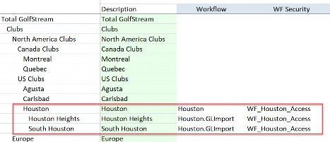
Figure 3.11
| Accounts | ||||
| Description | Acc Type | Group? | Entity | |
| 10000 | Petty Cash | Asset | Yes | |
| 10100 | Cash Deposits | Asset | Yes | |
| 10200 | Other Cash Equivalents | Asset | Yes | |
| 10300 | Marketable Securities | Asset | Yes | |
| 10400 | Restricted Cash | Asset | Yes | |
| 10999 | Total Cash | Asset | Yes | By Base Entity |
| 11000 | Trade Receivables | Asset | No | |
| 11100 | Other Receivables | Asset | No | |
| 11200 | IC Receivables | Asset | No | |
| 11300 | Allowance for Doubtful Accounts | Liability | No | |
| 11999 | Net Accounts Receivable | Asset | ||
| 12000 | Raw Materials Inventory | Asset | Yes | |
| 12100 | Work in Progress Inventory | Asset | Yes | |
| 12200 | Finished Goods Inventory | Asset | Yes | |
| 12300 | Supplies - Inventory | Asset | Yes | |
| 12400 | In Transit Inventory | Asset | Yes | |
| 12999 | Total Inventories | Asset | Yes | Total Company |
| 13000 | Prepaid Insurance | Asset | No | |
| 13100 | Prepaid Rent | Asset | No | |
| 13200 | Prepaid Taxes | Asset | No | |
| 13300 | Prepaid Other | Asset | No | |
| 13999 | Total Prepaid Expenses | Asset |
Figure 3.12
Understanding the client’s security design is also very important. As per the previous example, Users will need access to the import Workflows that are used to import data. Review the existing security, and plan on how to layer in the Account Reconciliations Security Groups.
| Note: Creating a security matrix is very helpful in this process. It will be easier to identify any issues that security may cause when Users attempt to prepare and approve Reconciliations. |
Access Group/User Houston
Manager
Houston Analyst
to GolfStream to Houston Data
to Manage Houston
Figure 3.13
Review the existing Scenarios and identify unused Scenario Types. Choose one unused Scenario Type to be assigned to the new Account Reconciliations destination Scenario. In this case, we are using the Model Scenario Type for the new AccountReconciliations Scenario.
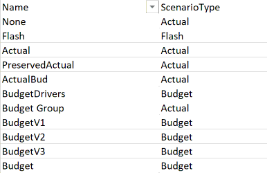
Figure 3.14
| Scenario Type | Actual | Model | Operational | Plan | Sustainability |
| Scenario: | Actual | AccountReconciliations | Plan | ||
| PreservedActual | |||||
| ActualBud | |||||
| Budget Group | |||||
| CapEx Group |
Figure 3.15
You will need to create new Security Groups for the Users of Account Reconciliations and build the Account Reconciliations with the current security design in mind. The Users will need access to the Actual Import Workflows, the new Account Reconciliations Scenario, and the ancillary tables.
The configuration settings can be set based on the information provided by the client already. Any settings not provided by the client can be turned on so that the clients see the result.
Run Discover once the Accounts are defined. You can use OneStream Parent Accounts in the Member Filter; since none of the GL Accounts are mapped to OneStream Parent Accounts, there will not be any Reconciliations in the Inventory for those OneStream Parent Accounts, only the Child Accounts of the selected Parent.
Create Account Groups based on the information provided to you by the client. These can be created manually or through the Group Update Template provided in the solution. Once the groups are created, add the individual Account Reconciliations to the newly-created Account Group on the Inventory page. The last step is to run the Process button on the Reconciliation page. The number of Reconciliations will be reduced when this process has been completed.
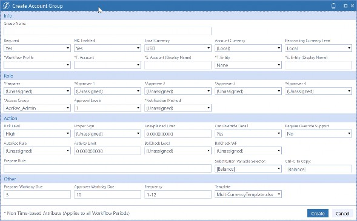
Figure 3.16
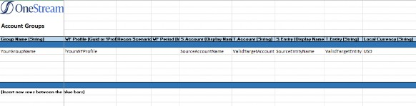
Figure 3.17
Once the Groups have been created and populated, the client can review the Inventory and generate the Users, plus roles that should be assigned to each User. This can be done by logging into OneStream and reviewing the Reconciliations, providing an existing list of which User is responsible for each Account by Entity, or by downloading the Inventory to a CSV file and filtering on the group column.
In this example, the client is downloading the Reconciliations from the Reconciliation page itself.
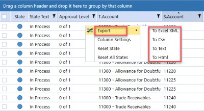
Figure 3.18
Figure 3.19
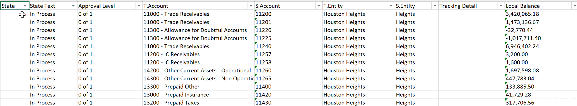
Figure 3.20
In this next example, though, the client is downloading the Reconciliations from the Inventory page. The Inventory page can only be accessed by Users that have Administration rights.
Figure 3.21
From the Administration page, navigate to the Inventory page.
Figure 3.22
Account Reconciliations Implementation Reconciliations can now be exported by clicking on the Export icon.
Figure 3.23
It is important to remember to filter this file on Account Reconciliations that are not part of an Account Group.
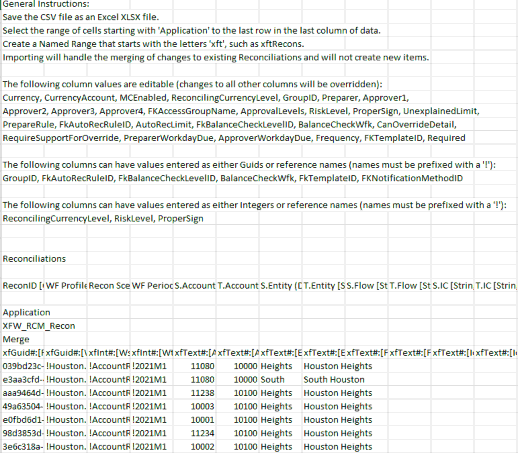
Figure 3.24
Next, the client needs to focus on the Account Reconciliations that are part of an Account Group. To extract the Account Groups, have the client follow these steps. From the Administration page, select the Groups icon.
Figure 3.25
Select the Export button and a CSV file will open on your desktop.
Figure 3.26
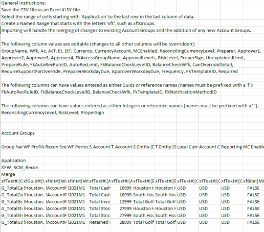
Figure 3.27
Once the client returns the files with User roles included, you can organize them in a way that will help create Security Groups. These Security Groups can be created on the System tab and then assigned to the Access Groups, which are then assigned to the Account Reconciliations.
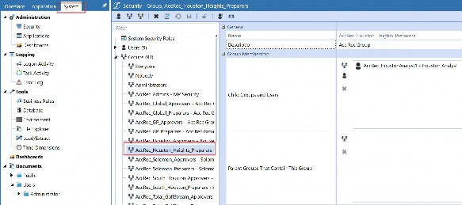
Figure 3.28
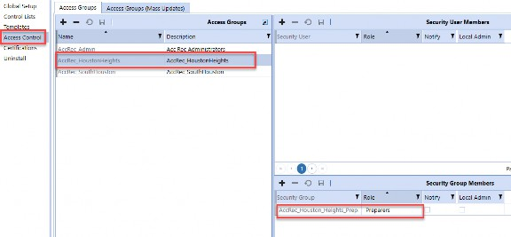
Figure 3.29
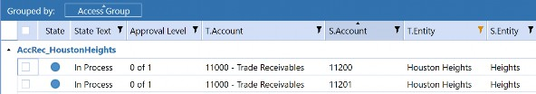
Figure 3.30
Alternatively, you can go directly to the Access Control page and create the security there. The difference is that – in this second option – the User is added to the Access Control group, whereas in the first example, a System Security Group is added to the Access Control Group.
Both options work, but creating Security Groups on the Security tab will provide more flexibility to the client.
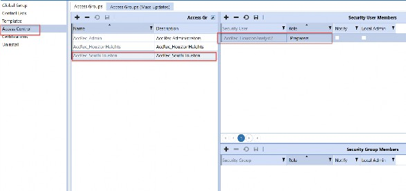
Figure 3.31
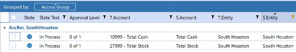
Figure 3.32
Create a design document that the client can use to review the configuration of the solution, along with Account Groups and security. The design document is very important because it also covers the timeline and the scope of the project. It is also important to review the document with the client to make sure everything is understood.
After reviewing the Users, make sure they all have valid OneStream IDs. Never delete an old OneStream User ID because the audit logs will be impacted. Instead, set the Is Enabled setting to False for User IDs that no longer use OneStream.
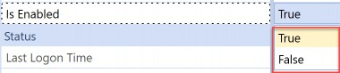
Figure 3.33
Send the completed design document to the client and have the client send any feedback or comments. This should be an iterative process. Once all the client’s questions and concerns are addressed in the design document, they will be able to sign and approve the document. This will facilitate a smoother build phase and will help with any scope discussions that may arise.
Account Reconciliations Implementation
Phase Two
If Phase One is the cornerstone of the project, then Phase Two is the structure itself. The Global Options are set, and the solution is configured to the client’s specifications. The client will be able to see how their data is being used in the solution, and will not have to rely on examples from
GolfStream. This phase is also the time to adjust the configuration and address any issues that may arise.
Account Reconciliations Implementation › Phase Two
Configuration
Configuring Global Options and Global Defaults is the core of the build. You will have a workable Inventory once the Discover process is completed, but it is better to spend time on all the settings before running Discover. Remember the adage “measure twice and cut once.” Review the settings twice and run Discover once!
Discover has run on default settings, and there is an Inventory showing in Account Reconciliations. A default Base-level Reconciliation is a combination of a Stage (GL) Account and a OneStream Entity. You now need to go back to the Global Defaults and add UD1 as a tracking level, expanding the Reconciliation Definition to include the UD1 along with the Stage (GL) Account and a OneStream Entity. This will result in doubling the Inventory, at the very least. If each Reconciliation has more than one UD1, then each line of data will be added to the Inventory.
Avoid the temptation to jump right in and start configuring Global Options and Global Defaults. There are a few things that need to be created before the configuration starts. For the Global Options tab, create the Security Groups that will be used in Security Roles selections.
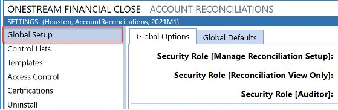
Figure 3.34
Next, create a new Scenario under Dimensions (using an unused Scenario Type; see “Source Scenario” in the previous chapter) that will be used for Reconciliation source selection.
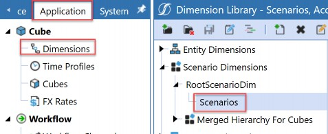
Figure 3.35
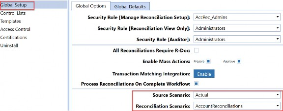
Figure 3.36
An email connection can also be set up prior to configuring Account Reconciliations.
Figure 3.37
On the Global Defaults tab, create a new tracking level if the default (Entity) is not detailed enough.
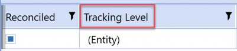
Figure 3.38
Create a Security Group under Access Control that will give the Account Reconciliation Administrator a way to track new Reconciliations. When new Reconciliations are discovered, the RCM_Admin access control group will be assigned to them. The Users in this group will be able to view the Reconciliations and – through a process that will be created in the project – the responsible person can ensure that proper responsibility is assigned.
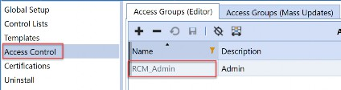
Figure 3.39
Figure 3.40
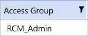
Figure 3.41
Consider tasks that are configured outside of Account Reconciliations, which impact the solution. These might include:
Integrations for Balance Check Reconciliations.
Non-Stage data that needs to be incorporated into the Account Reconciliation Inventory (Journals and Forms).
New Accounts (Stage and OneStream).
Account Reconciliations Implementation › Phase Two › Configuration
Settings
The remaining settings can be updated after Discover has been processed. However, it is important to have these settings defined and updated before User Acceptance Testing.
Control Lists are Item Types, Reason Codes, Close Dates, and Aging Periods. Item Types will impact Preparers; Reason Codes will impact Approvers; Close Dates will impact the detail of the Reconciliation; and the Aging Periods will impact the transaction detail of the Reconciliation.
Access Control will give Users the ability to prepare, approve, view, or comment on each Reconciliation. Access Control groups create the security for each Reconciliation. It is important to define security early in the project so that Users can validate the settings. Users will need to interact with all their Reconciliations during training or User Acceptance Testing.
Certifications are available for the Preparer and Approver roles.
Account Reconciliations Implementation › Phase Two › Configuration
Automation
Automation is not an Account Reconciliation setting, but it is a major feature of OneStream. The Discover and Process steps can be automated by creating a Data Management sequence for each function and adding these new tasks to the scheduler feature in OneStream. Both of these processes need to run any time close-related data is loaded into OneStream.
Account Reconciliations Implementation › Phase Two › Configuration
Build Sign-off
Review the Account Reconciliations MarketPlace solution with the Project Team when the build is complete. This needs to be a milestone in your project timeline. Give yourself enough time to demonstrate the entire configuration to the team in an interactive session that should last 60 to 120 minutes. Enlist several End/Power Users to help with the demonstration. Have one User assigned to each role to give the Project Team different views of the solution. Log in as sample Users if you don’t have access to Users.
| Note: This meeting is key and will energize the team and create momentum when going into User Acceptance Testing. |
Account Reconciliations Implementation › Phase Two › Configuration
User Acceptance Testing
User Acceptance Testing is critical in any project, so it cannot be underestimated. This can easily be moved to Phase Three if needed. The primary objective is to have Users perform Reconciliations and give feedback to the Project Team on anything that needs to be improved or corrected. Some issues can be solved with more education, but other issues may require updates to the configuration. All issues should have a resolution date before User training, and all issues need to be resolved before going live.
Account Reconciliations Implementation › Phase Two › Configuration
Case Study – Implement Account Reconciliations for GolfStream
In Phase Two, we want to configure Account Reconciliations with the settings established in Phase One. The difference between the preliminary configuration and the Phase Two configuration is that the client has validated the settings. There should be no change at this point without a scope change discussion with the client. Phase Two can be divided into two sections:
Build
User Acceptance Testing (UAT)
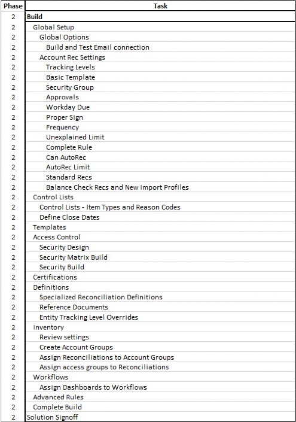
Figure 3.42
The build should be primarily completed but update any configuration settings based on the client’s feedback. Be aware that some changes will increase the Account Reconciliation Inventory. For example, if you are required to add a new tracking level for UD1 Members, this will increase the Inventory by the number of Base UD1 Members. If UD1 has 10 Base Members and the new tracking level is applied to three Account definitions, then the Inventory can potentially increase by 30 new Reconciliations.
The number of new Reconciliations will be dependent on how many Entity/Account/UD1 intersections have data. In this situation, the original Account Reconciliations need to have their Required status changed to False.
Although the configuration settings are a major part of the build, there are other important aspects that should not be overlooked. Creating and uploading reference documentation, templates, the User Acceptance Testing, and an Administration document should also be done in Phase 2.
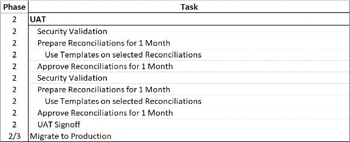
Figure 3.43
Schedule UAT as soon as you can, so there is time to train the Users and capture any feedback that they may have. Leave yourself time to incorporate this feedback so the Users can run through the UAT steps again. This will help the client see the changes in the configuration before User training.
Leverage UAT training documentation for User Training/Quick Start guides. This will save valuable time that can be spent supporting the client during this stressful time in the project.
Once UAT has been completed, and sign-off has been obtained, install Account Reconciliations in the production environment, and migrate the development artifacts. Once the settings have been configured, run Discover, add Account Groups and Access Groups, then finally update the newly-created Inventory so it matches the settings in development. The last step is to Process the Reconciliations for the first month of User Training.
Account Reconciliations Implementation
Phase Three
In this phase, the client will lead the way once User training has been completed. Allow for sessions of 120 minutes to accommodate any questions or issues that may arise. There is still time to make changes to individual Reconciliations, but be aware of downstream impacts these changes may have on the remaining time in Phases 3 and 4.
Account Reconciliations Implementation › Phase Three
User Training
Know your audience! Creating training documentation that is too complicated will confuse Users and they will have a bad experience with OneStream. One way to avoid this is by understanding Users before the training documents have been created. There is time in the first two phases to understand if these particular Users are new to OneStream or if they have had other interactions with the software. If this is the first time a User has logged into OneStream, then add some steps on how to get into the system. It may sound like common sense, but it will only frustrate Users if they cannot complete this simple first stage.
Account Reconciliations Implementation › Phase Three
Delayed Parallels
The User should select the more complicated Reconciliations during the delayed parallels. Once they have completed the first month, they can validate the Reconciliation against what was completed in the client’s former process. The User can then go to the next time the Reconciliation needs to be completed and pull line items and support through to the current month. Encourage questions from Users and make yourself available to them, so they feel comfortable with the process before going live.
Account Reconciliations Implementation › Phase Three › Delayed Parallels
Case Study – Implement Account Reconciliations for GolfStream
In Phase Three, we want to start delivering the solution to the User audience.
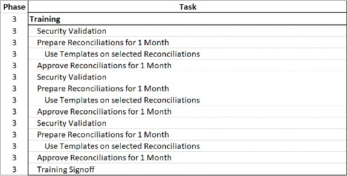
Figure 3.44
Schedule training sessions with the client. Keep the sessions to two hours and allow for follow-up sessions with Users. Once the security setup is completed, you can create more detailed test scripts. For example, in our case study, Houston Analyst 1 is responsible for all the Houston Heights Reconciliations as a Preparer. You can create a sign-off script asking the User to attest to the fact that they can access the specific list of Accounts. This would become the Security Validation for the training and can be used for the delayed parallels.
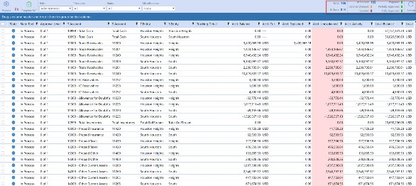
Figure 3.45
Send the training and quick start guides to Users and upload them to OneStream. Take advantage of OneStream’s file system and create folders so Users can access the training documentation.
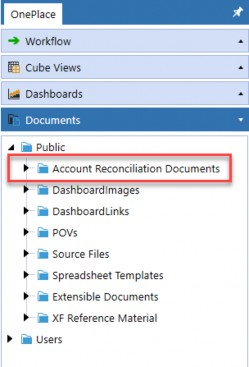
Figure 3.46
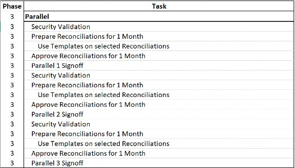
Figure 3.47
Schedule parallels once the documentation has been completed. Reiterate to Users that the objectives of these sessions are to:
Have Users validate security – Users should review all the Reconciliations they have access to, and verify that they should see these Reconciliations.
Have Users learn how to prepare Reconciliations, attach supporting documentation, pull items and documents forward, and use templates.
Have Users learn how to approve Reconciliations, review supporting documentation, create audit files, and add comments.
Have Users learn how to view and comment on Reconciliations.
Capture User feedback – this is very important because it will give the client a list of objectives for a follow-up project or – if the issue is small – it will help improve the project by incorporating ideas from Users.
If feedback is incorporated into the current scope, then the User should re-test the issue before going live.
Account Reconciliations Implementation
Phase Four
The final phase of the project should be brief and painless. Review all the decisions and issues to date with the Project Team and finalize a go-live date. All issues should have been resolved by this point, but it’s important to review them one last time with the Project Team.
Account Reconciliations Implementation › Phase Four
Go Live
Congratulations! This is the moment that you and your client have been working towards! Going live with OneStream Account Reconciliations is a very exciting time. Take a deep breath and celebrate the fact that you have helped your client expand their OneStream footprint, and you have participated in the Art of the Possible!
Account Reconciliations Implementation › Phase Four
Post-Go Live Support
It’s always important to support the client after the project is live. One approach is to schedule a touch-base meeting every day for the first live week and decrease the frequency every week post-go-live. By the end of the first go-live close, the client should be self-sufficient on Account Reconciliations.
Account Reconciliations Implementation › Phase Four › Post-Go Live Support
Case Study – Implement Account Reconciliations for GolfStream
In Phase Four, we are preparing for take-off! This should be a time for celebration. You and your client have gone through a MarketPlace solution implementation with a successful result.
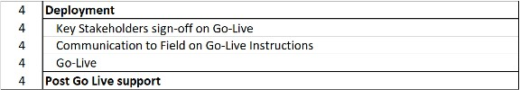
Figure 3.48
Schedule a meeting with the key stakeholders to discuss the overall project. You can discuss what worked well and what didn’t. Were the measures of success met? At this meeting, the decision to go live should be agreed to.
The client should be able to communicate to Users and management that the project was a success and that Account Reconciliations will be managed in OneStream.
Once the client is live, provide support for Users for the first month. This will help the client adapt the solution fully, and all the hard work done on the project will be validated!
Account Reconciliations Implementation
Conclusion
OneStream’s Account Reconciliation MarketPlace solution is unlike any other product in the market and creating a structured manner to configure the solution is a critical success factor. Over the years, the solution has changed but my approach has stayed the same. Treat the configuration process like any other project and you will be successful!
Account Reconciliations Implementation
Chapter Appendix
Account Reconciliations Implementation › Chapter Appendix
Questionnaire Example
1. What is the overall timeline?
An example timeline would be:
Kick-off at the end of January
Design sign-off by the end of February
UAT at the end of March
Parallel 1 at the end of April
Parallel 2 in mid-May
Go live in June
The GolfStream timeline:
Kick-off the week of 06/18/22
Design sign-off the week of 07/16/22
UAT at the end of August
Parallels 1, 2, and 3 at the end of September
Go live in October
2. Are there any current or future projects scheduled that will impact GL Accounts or Accounts that are submitted into OneStream?
Account Reconciliations will use GL and OneStream Accounts to create the Reconciliation Inventory. There will be an impact on Account Reconciliations if the Base-level OneStream Accounts change.
GolfStream: No.
3. Will OneStream-only data need to be included in the Reconciliations (e.g., Form or Journal data)?
This data will need to be moved from the Cube to Stage, so it is included in the Account Reconciliation Inventory.
GolfStream: No.
4. How many Users reconcile Accounts today?
All Users will need a OneStream ID/license. GolfStream: 10 No new licenses will be needed.
5. Estimate the number of expected Reconciliations and who will Prepare and Approve each Reconciliation?
Account Reconciliations has the following User roles:
Preparer – Can see assigned Reconciliations and perform preparation duties through clicking the Prepare button.
Approver 1 through Approver 4 – Choose up to ten levels of Approvers. There must be a User assigned to at least as many Approver levels as there are Approvals on the Reconciliation that this Access Group is assigned to. So, if the Reconciliation has Approvals set at 3, there must be at least a User assigned to the related Access Group at Preparer, Approval 1, Approval 2 and Approval 3 in order to be able to prepare, and ultimately approve, the Reconciliation.
Commenter – Optional. This User can see the data and activity but can only make Comments related to this Reconciliation.
Viewer – Optional. This User can see the data and activity but cannot make Comments related to this Reconciliation.
6. Will any Accounts be grouped?
Grouping Reconciliations will reduce the overall number of Reconciliations that need to be completed in a month. There are many ways to group Accounts, but Accounts can be mainly grouped by Entity, Account, or across currencies.
GolfStream: Yes.
7. How many currencies are reconciled?
GolfStream: Four, but only USD for this project.
8. Are there any non-Balance Sheet Account Reconciliations?
Typically, only Balance Sheet Accounts are reconciled. GolfStream: No.
9. How many levels of approval will most Reconciliations need?
There can be up to four levels of approval for each Reconciliation.
What Risk Levels will be needed? (Low/Medium/High)
When are Reconciliations due for Preparers?
When are Reconciliations due for Approvers?
How often will the Reconciliation need to be performed? (i.e., What is the frequency? Monthly, quarterly, yearly?)
Are there any unexplained limits other than zero? (ex. 0.00 = all Reconciliations have to be done to the penny).
What dollar amount would be used to auto reconcile Accounts?
Are there any Reconciliations that need special rules (e.g., auto reconcile if the balance changes by less than 3%, then prepare or approve the Reconciliation)?
Will any subledger data need to be reconciled?
Will each subledger feed equal one Reconciliation, many Reconciliations? How many Entities are in the subledger feed?
Account Reconciliations Implementation › Chapter Appendix › Questionnaire Example
Milestone Examples
| Milestone | Completed By | Phase |
|---|---|---|
| Design and Requirement Sessions | TBD | 1 |
| Key Stakeholders sign-off on configuration settings | TBD | 1 |
| Design Document Completed | TBD | 1 |
| Design Document Acceptance/Sign-off | TBD | 1 |
| Build Completed | TBD | 2 |
| User Acceptance Training | TBD | 2 |
| Key Stakeholders sign-off on UAT | TBD | 2 |
| Migrate (Build) to Production | TBD | 3 |
| End User Training | TBD | 3 |
| Parallel 1 Sign-off | TBD | 3 |
| Parallel 2 Sign-off | TBD | 3 |
| Parallel 3 Sign-off | TBD | 3 |
| Key Stakeholders sign-off on Go-Live | TBD | 4 |
| Go-live | TBD | 4 |
| Support | TBD | 4 |
Figure 3.49
Account Reconciliations Implementation › Chapter Appendix › Questionnaire Example
Detailed Tasks
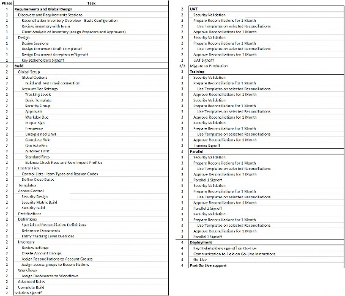
Figure 3.50